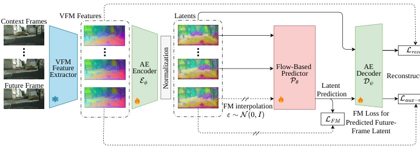
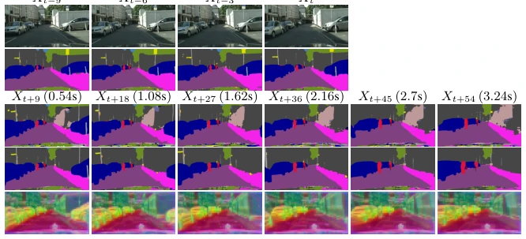
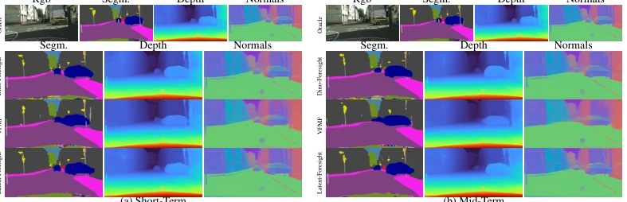
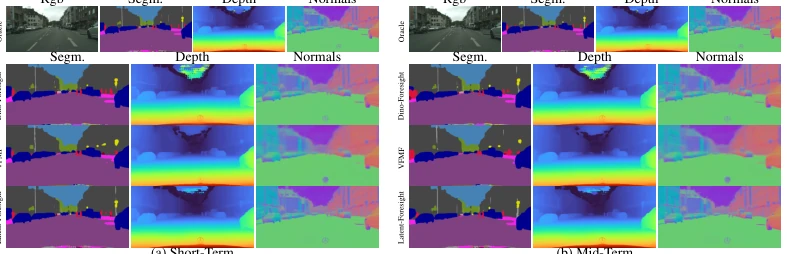

This paper poured cold water on the world model community: Don't always think about two-stage training; end-to-end is the way to go. Latent-Foresight attempts to combine VFM feature compression and flow prediction, making the latent space serve "predictability" directly. Although it sounds sexy, in practice, joint training easily leads to latent collapse; the authors barely stabilized it with a bunch of tricks (e.g., Stop-Gradient, BatchNorm). It is indeed stronger than DINO-Foresight and VFMF, especially in long-term temporal prediction. However, the core is still a nesting based on DINOv2, not solving the representation bottleneck caused by VFM freezing itself. Moreover, the computational overhead is not small, after all Flow Matching sampling is slow. Overall, it is a good engineering optimization, but theoretical breakthroughs are limited, belonging to "building a more stable attic on someone else's foundation".
研究动机Motivation
世界模型的核心挑战在于如何预测未来场景演化。现有方法主要分为像素级（如 VISTA）和特征级。像素级计算成本高且语义弱（Karypidis et al., 2025b）。特征级利用 VFM 特征（如 DINOv2）更优，但大多采用两阶段范式：先训 tokenizer 压缩，再训 predictor（Boduljak et al., 2025）。这种解耦导致 latent 空间仅优化重建，未适配时序动态，且确定性预测无法捕捉不确定性（Karypidis et al., 2025b）。直接预测原始 VFM 特征则因维度太高难以建模（Karypidis et al., 2025b）。本文旨在解决此问题，探索 tokenizer 与预测器能否联合训练，使 latent 空间天生具备时序可预测性，而非事后适配。
The core challenge of world models lies in how to predict future scene evolution. Existing methods are mainly divided into pixel-level (e.g., VISTA) and feature-level. Pixel-level has high computational cost and weak semantics (Karypidis et al., 2025b). Feature-level utilizing VFM features (e.g., DINOv2) is better, but most adopt a two-stage paradigm: train tokenizer compression first, then train predictor (Boduljak et al., 2025). This decoupling leads to latent space only optimizing reconstruction, not adapting to temporal dynamics, and deterministic prediction cannot capture uncertainty (Karypidis et al., 2025b). Directly predicting raw VFM features is difficult to model due to too high dimensionality (Karypidis et al., 2025b). This paper aims to solve this problem, exploring whether tokenizer and predictor can be jointly trained, making latent space inherently possess temporal predictability, rather than post-hoc adaptation.
The framework includes VFM feature extraction, Tokenizer, and Flow Predictor. First, freeze DINOv2 to extract multi-layer features and concatenate. Tokenizer consists of AE encoder and decoder composed of lightweight ViT, compressing high-dimensional features into low-dimensional latent. Flow Predictor based on Flow-Matching, inputs context latents and noisy future latent interpolation, predicts velocity field. Key innovation lies in end-to-end joint optimization strategy: 1. Latent Normalization: Use BatchNorm without affine parameters to force latent zero mean unit variance, preventing signal/noise imbalance during interpolation. 2. Stop-Gradient: Add Stop-Grad to both target latent and noisy input, preventing gradient backpropagation causing encoder degradation or predictor taking shortcuts. 3. Auxiliary reconstruction loss: Apply reconstruction constraint to predicted latent as well, reducing training-test distribution discrepancy. Final objective function is sum of reconstruction loss, auxiliary reconstruction loss, and Flow Loss, ensuring latent is both faithful and coherent. Additionally, noise distribution uses Logit-Normal biased towards high noise, further improving prediction stability.

Figure 1: Overview of Latent-Foresight. We jointly train end-to-end a VFM tokenizer en- coder Eϕ, decoder Dψ, and flow-based predictor Pθ, while keeping the VFM backbone frozen. The encoder compresses per-frame features into a compact predictable latent space, followed by a nor- malization layer. The decoder is supervised by Lrecon. The predictor takes context latents and a noisy interpolation of the future latent as input, trained with LFM. Stop-gradient operations on both the future latent and the noisy input prevent collapse. Laux-recon supervises the predicted features against the ground truth.
Evaluated on Cityscapes, nuScenes, and Kubric. Baselines include DINO-Foresight, DeltaTok, VISTA, and two-stage AE methods. Tasks cover semantic segmentation, depth estimation, and surface normal. Metrics are mIoU, δ1, and angle error. Results show end-to-end method is superior to two-stage baselines in short-term and medium-term prediction, especially significant improvement in movable object (MO) category. Zero-shot transfer to nuScenes also performs better. Ablation studies show removing Stop-Gradient or Normalization leads to training collapse, proving their stability is key. Latent dimension 256 achieves best balance between reconstruction and prediction. In long-term temporal prediction, Latent-Foresight can maintain dynamic object motion, while baselines tend towards static.

Figure 2: Qualitative comparison of long-term forecasting. Given four context frames (top), we forecast up to 3.24s ahead. We show semantic segmentation from DINO-Foresight and Latent-Foresight, and a PCA visualization of Latent-Foresight predicted features.

Figure 3: Qualitative comparison on Scene 0. We compare Dino-Foresight, VFMF, and Latent- Foresight (Ours) against ground truth (GT) for semantic segmentation, depth, and surface normal prediction at short-term (a) and mid-term (b) horizons. Latent-Foresight yields predictions that more closely match the oracle, particularly around dynamic foreground objects.

Figure 4: Qualitative comparison on Scene 340. We compare Dino-Foresight, VFMF, and Latent- Foresight (Ours) against ground truth (GT) for semantic segmentation, depth, and surface normal prediction at short-term (a) and mid-term (b) horizons. Latent-Foresight produces sharper and more accurate predictions than the two-stage baselines across all three tasks.